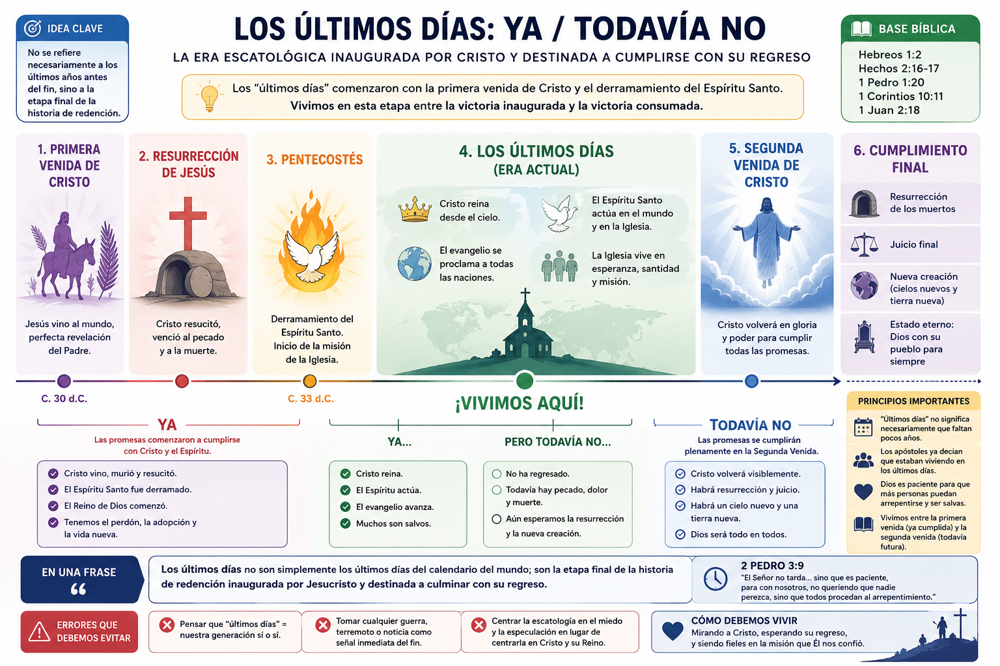

En el estudio anterior llegamos a una conclusión que puede resultar extraña:
🟢 Según el Nuevo Testamento, los “últimos días” ya habían comenzado en el siglo I.
Pero eso abre un problema bastante lógico:
🤔 Si Pedro decía que vivía en los últimos días hace casi 2.000 años, ¿cómo pueden seguir siendo “últimos”?
Para responderlo no alcanza con buscar noticias actuales. Tenemos que averiguar qué significaba esa expresión dentro de la propia Biblia.
Y vamos a descubrir algo muy importante para todo el curso:
“Los últimos días” no es necesariamente sinónimo de “los últimos pocos años antes de la Segunda Venida”.
Al terminar deberíamos comprender:
📖 qué significaban expresiones como últimos días, últimos tiempos y última hora;
🏛️ cómo las utilizaba el Antiguo Testamento;
✝️ por qué los apóstoles creían que ya estaban viviendo en ellos;
⏳ cómo pueden durar aproximadamente dos mil años;
⚠️ si guerras, terremotos, apostasía, etc. permiten saber que estamos inmediatamente antes del fin;
🧭 y qué podemos agregar con seguridad a nuestro Mapa Escatológico.
Si hoy alguien dice:
“Estamos en los últimos días.”
probablemente entendamos:
lunes → martes → miércoles → jueves → 💥 FIN
Es decir:
queda muy poco tiempo.
Por eso resulta extraño leer Hebreos:
“en estos últimos días nos ha hablado por medio de su Hijo.”
— Hebreos 1:2
Y pensar:
“¿Cómo pueden ser los últimos días si pasaron otros 2.000 años?”
El problema puede estar en nuestra definición de “últimos”.
Imaginemos un partido:
Cuando comienza el segundo tiempo estamos en la última etapa del partido, aunque todavía queden 45 minutos.
“Último” puede indicar no solamente proximidad cronológica, sino la etapa final dentro de una secuencia.
Esta idea nos va a resultar mucho más clara cuando veamos cómo utiliza la Biblia la expresión.
Este punto es fundamental.
Cuando Pedro, Pablo o el autor de Hebreos hablaban de los últimos días, no estaban inventando un vocabulario nuevo.
El Antiguo Testamento ya utilizaba expresiones equivalentes.
La expresión hebrea que aparece varias veces es:
Literalmente algo parecido a:
“la parte posterior/final de los días”
Dependiendo del contexto puede traducirse:
“en los días venideros”, “al final de los días”, “en los últimos días”.
Y acá empieza lo interesante.
Leamos Isaías 2:2:
“En los últimos días, el monte del templo del Señor será establecido como cabeza de los montes... y hacia él correrán todas las naciones.”
Después dice:
“De Sión saldrá la ley, y de Jerusalén la palabra del Señor.”
— Isaías 2:3
Y aparece la famosa imagen:
“convertirán sus espadas en rejas de arado...”
— Isaías 2:4
Tenemos entonces:
↓
🏔️ monte del Señor
↓
🌎 naciones acercándose
↓
📖 palabra de Dios extendiéndose
↓
🕊️ Reino y paz.
Fijate que todavía no aparece necesariamente:
💥 “el planeta explotará”.
Los últimos días están relacionados con la era mesiánica y el Reino de Dios.
Miqueas 4:1 comienza:
“En los últimos días...”
y reproduce una profecía muy similar.
Otra vez tenemos:
últimos días → Reino de Dios → naciones → palabra del Señor.
Por tanto, desde el AT ya encontramos una idea importante:
🟢 Los últimos días son la época en la que las promesas escatológicas de Dios comienzan a alcanzar su cumplimiento.
Todavía necesitamos ver cuándo comienza esa época.
Y ahí entra Jesús.
Hebreos comienza estableciendo un contraste.
En esencia:
ANTES
Dios habló muchas veces y de muchas maneras:
📜 por los profetas
↓
AHORA
“en estos últimos días”
Dios habló:
✝️ por el Hijo.
La estructura es:
ANTIGUAMENTE AHORA
PROFETAS HIJO
│ │
│ │
▼ ▼
Era anterior ───────────────────► Últimos díasEl acontecimiento que marca la nueva etapa es:
No una guerra moderna.
No la aparición de Internet.
No Israel en 1948.
No un terremoto.
No una pandemia.
Cristo.
Eso cambia completamente nuestro punto de partida escatológico.
Ahora volvemos al texto que vimos brevemente en el estudio anterior.
Los discípulos reciben el Espíritu Santo.
Pedro explica lo sucedido citando Joel 2.
Dice:
“Esto es lo que dijo el profeta Joel...”
Y continúa:
“En los últimos días —dice Dios— derramaré de mi Espíritu sobre toda carne...”
— Hechos 2:16-17
Prestemos atención a la lógica.
Joel había anunciado:
Últimos días
↓
🕊️ derramamiento del Espíritu.
Pedro presencia Pentecostés y dice:
“Esto es aquello.”
Por tanto:
Joel
🔮 “Vendrán los últimos días.”
↓
Pentecostés
🔥 “Han comenzado.”
Esto constituye evidencia muy fuerte.
Si comparás Joel 2:28 con Hechos 2:17, vas a notar algo.
Joel comienza:
“Después de esto...”
Pero Pedro lo presenta:
“En los últimos días...”
Pedro está interpretando el acontecimiento anunciado por Joel dentro del marco de los últimos días.
Esto significa que Pentecostés no es simplemente:
“un milagro espectacular”.
Es un acontecimiento escatológico.
🕊️ El Espíritu prometido para la era venidera ha sido derramado.
Por eso podemos añadir otra pieza:
🟢 Pentecostés es una señal de que la era escatológica prometida había comenzado.
Pablo utiliza un lenguaje precioso.
Habla del Espíritu Santo como:
“garantía de nuestra herencia”.
El término griego es:
Puede expresar la idea de:
depósito, garantía, anticipo.
Algo parecido a una seña.
Imaginemos que comprás algo por $1.000.000 y entregás $100.000 como seña.
Esos $100.000:
❌ no son todavía la totalidad;
pero
✅ garantizan que la operación ha comenzado y anticipan lo que viene.
Algo parecido ocurre con el Espíritu.
🕊️ Espíritu Santo.
🌎 redención completa.
Por eso Pentecostés encaja perfectamente con el concepto:
Hablando de Cristo dice que fue:
“manifestado en los últimos tiempos por amor a ustedes”.
Otra vez:
Cristo → últimos tiempos.
No:
Anticristo → comienzan los últimos tiempos.
No:
Gran Tribulación → comienzan los últimos tiempos.
La aparición histórica de Jesús ya pertenece a los últimos tiempos.
Este texto es muy interesante.
Pablo recuerda acontecimientos del Antiguo Testamento y después dice:
“estas cosas... están escritas para advertirnos a nosotros, a quienes ha llegado el fin de los tiempos.”
🚨 Otra vez.
Pablo incluye:
“a nosotros”.
Los cristianos de Corinto del siglo I.
No está diciendo:
“Algún día, dentro de miles de años, llegará una generación final.”
Dice que sobre ellos habían llegado los fines de las edades.
Esto refuerza muchísimo nuestra conclusión.
Ahora aparece uno de los textos más interesantes para nuestra futura discusión sobre el Anticristo.
Juan dice:
“Hijitos, ya es la última hora...”
Y después:
“así como ustedes oyeron que el anticristo viene, ahora han surgido muchos anticristos; por esto sabemos que es la última hora.”
Esperá.
😳
Juan no dice solamente:
“últimos días”.
Dice:
“última hora”.
Y eso fue escrito en el siglo I.
Entonces evidentemente “última hora” no puede significar literalmente que quedaban sesenta minutos para el fin del universo.
El lenguaje tiene un significado teológico/escatológico, no simplemente cronológico.
Hasta ahora tenemos:
“estos últimos días”
✝️ relacionados con la venida del Hijo.
“en los últimos días”
🕊️ relacionados con Pentecostés.
“los últimos tiempos”
✝️ Cristo ya fue manifestado.
“el fin de los tiempos”
👥 aplicado a los cristianos del siglo I.
“la última hora”
👥 aplicada igualmente al siglo I.
La acumulación de textos hace difícil sostener:
“Los últimos días todavía no habían comenzado.”
Por eso nuestra conclusión puede recibir:
El Nuevo Testamento considera que los últimos días comenzaron en conexión con la primera venida de Cristo y la inauguración de la era mesiánica.
Llegamos a la gran objeción.
Si comenzaron aproximadamente hace 2.000 años:
¿Cómo pueden llamarse últimos?
La respuesta empieza a aparecer cuando pensamos en eras, no solamente en cantidad de años.
Recordemos:
pecado muerte rebelión
Reino consumado resurrección vida eterna nueva creación.
Con Cristo ocurre algo inesperado:
la era venidera invade la era presente antes de que esta termine.
PRIMERA VENIDA SEGUNDA VENIDA
✝️ 👑
│ │
│ │
ERA PRESENTE ────────────┼─────────────────────────────────┤
│ │
│ │
│◄──── ÚLTIMOS DÍAS ─────────────►│
│ │
│ │
ERA VENIDERA └─────────────────────────────────┼────────►
↑ ↑
INAUGURADA CONSUMADA
YA TODAVÍA NO
── ──────────
👑 Reino Reino pleno
🕊️ Espíritu Resurrección
✝️ Mesías Juicio final
🌅 Cristo resucitó Nueva creaciónEsta imagen es central para entender nuestra posición provisional.
Los últimos días no serían solamente el último 0,1 % de la línea.
Son la etapa escatológica inaugurada por Cristo que culminará con su regreso.
No.
Y el propio Nuevo Testamento enfrenta una objeción relacionada.
Pedro advierte que vendrían burladores diciendo:
“¿Dónde está la promesa de su venida?”
La objeción era básicamente:
“Dijeron que Cristo regresaría. ¿Dónde está?”
Pedro responde hablando de la perspectiva divina del tiempo:
“para el Señor un día es como mil años, y mil años como un día.”
— 2 Pedro 3:8
Este texto muchas veces se utiliza incorrectamente como fórmula matemática:
1 día profético = 1.000 años.
❌ Ese no es el punto.
Pedro está evocando el lenguaje de Salmo 90:4.
Su argumento es:
Dios no experimenta el tiempo como nosotros ni incumple su promesa porque desde nuestra perspectiva parezca tardar.
Y enseguida explica por qué existe demora.
“El Señor no tarda en cumplir su promesa... sino que es paciente...”
La aparente demora está relacionada con la paciencia de Dios.
Eso transforma nuestra perspectiva.
Podemos pensar:
“¿Por qué Cristo todavía no volvió?”
Pedro responde esencialmente:
porque Dios está siendo paciente.
La historia continúa siendo también espacio para:
🌎 evangelización 🙏 arrepentimiento ❤️ misericordia ⛪ misión.
Por tanto, 2.000 años no constituyen automáticamente una refutación de la esperanza escatológica del NT.
Pero tenemos que ser precisos.
Podemos afirmar:
“Vivimos en los últimos días.”
🟢 Bíblicamente correcto.
Pero si con esa frase queremos decir:
“Por lo tanto sabemos que faltan pocos años para la Segunda Venida.”
🚫 Eso no se desprende automáticamente de la expresión.
¿Por qué?
Porque:
Pedro vivía en los últimos días.
Pablo vivía en los últimos días.
Juan vivía en la última hora.
Los cristianos del siglo I vivían en los últimos tiempos.
Entonces decir:
“Estamos en los últimos días”
no demuestra por sí mismo:
“Somos necesariamente la última generación.”
Esta distinción es enorme.
Acá tocamos algo que estudiaremos muchísimo más profundamente en Mateo 24.
Cada vez que ocurre:
🌍 terremoto importante ⚔️ guerra internacional 🦠 pandemia 🔥 desastre natural
aparece alguien diciendo:
“Mateo 24. Señales del fin.”
Pero veamos algo que Jesús dice:
“oirán de guerras y rumores de guerras...”
Y después:
“pero aún no será el fin.”
😮
Ese final de la frase muchas veces recibe mucha menos atención.
Jesús incluso dice:
“no se alarmen”.
Esto no resuelve todavía Mateo 24 —sería prematuro hacerlo—, pero establece una advertencia metodológica:
🔴 No podemos tomar automáticamente cualquier guerra o terremoto contemporáneo como prueba de que la Segunda Venida ocurrirá inmediatamente.
Cuando lleguemos al Módulo 4 vamos a analizar todo esto versículo por versículo.
Existe otra idea popular:
“Sabemos que Cristo está por volver porque el mundo cada vez está peor.”
Puede haber argumentos escatológicos relacionados con apostasía, persecución y oposición final.
Pero la afirmación:
“cada año necesariamente será peor que el anterior hasta que vuelva Jesús”
no es una enseñanza bíblica tan explícita como muchas veces se supone.
Además, medir “peor” resulta tremendamente complicado.
¿Peor respecto de cuándo?
¿La Primera Guerra Mundial?
¿La Segunda Guerra Mundial?
¿La peste negra?
¿Las persecuciones romanas?
¿La esclavitud antigua?
¿Genocidios modernos?
¿Persecución religiosa?
No podemos convertir nuestras impresiones sobre la actualidad en un termómetro profético.
Primero necesitamos estudiar los textos.
Esta distinción va a ser importantísima.
Tenemos:
Una era/período inaugurado con Cristo.
Y tenemos:
Una expresión profética relacionada con intervenciones decisivas de Dios en juicio y salvación.
No son automáticamente lo mismo.
Más adelante veremos algo sorprendente:
El Antiguo Testamento habla de varios acontecimientos históricos utilizando el lenguaje del Día del Señor.
Eso nos preparará para comprender el lenguaje de juicio en Mateo 24 y Apocalipsis.
Será el Estudio 5.
También tenemos que aprender a preguntar:
¿El fin de qué?
Porque la palabra fin no significa automáticamente:
🌎 destrucción del universo.
Puede hablarse del final de:
🏛️ una ciudad 👑 un reino 📜 una época ⚖️ un sistema 🌎 la historia presente.
Por ejemplo, cuando leamos expresiones como:
“fin del siglo”
tendremos que estudiar qué significa αἰών (aiōn), “era/edad”, y no asumir inmediatamente que significa destrucción física del planeta.
Esto será crucial para Mateo 24.
“Últimos días = exclusivamente nuestra generación.”
No.
Los apóstoles ya utilizaban esa expresión.
“Últimos días = quedan necesariamente pocos años.”
Tampoco podemos demostrar eso simplemente por la expresión.
“Todo acontecimiento malo es una señal de que el fin está a punto de ocurrir.”
Necesitamos contexto.
Nunca:
CNN/noticia → Apocalipsis
Primero:
Biblia → contexto → exégesis → interpretación → actualidad.
Esta quizá sea la enseñanza teológica más importante de hoy.
Podemos estudiar escatología obsesionándonos con:
👤 Anticristo 🔢 666 🐉 bestia ⚔️ Armagedón 🔥 tribulación.
Pero el NT organiza las últimas cosas alrededor de:
¿Por qué comenzaron los últimos días?
Cristo vino.
¿Por qué sabemos que habrá resurrección?
Cristo resucitó.
¿Por qué existe esperanza de victoria?
Cristo reina.
¿Qué esperamos?
Cristo regresará.
¿Quién derrota la muerte?
Cristo.
¿Quién juzga?
Cristo.
¿Quién entrega finalmente el Reino al Padre?
Cristo.
Por eso una escatología bíblica debería ser fundamentalmente:
cristocéntrica
y no:
anticristocéntrica.
🔥 Ese principio nos va a servir muchísimo cuando lleguemos a Apocalipsis.
Los últimos días ya habían comenzado en tiempos apostólicos.
Hebreos 1:2 Hechos 2:16-17 1 Pedro 1:20 1 Corintios 10:11 1 Juan 2:18.
La venida de Cristo y el derramamiento del Espíritu son acontecimientos que inauguran el cumplimiento escatológico.
Vivimos actualmente dentro de esa era escatológica.
El modelo:
“Ya / todavía no”
explica de manera especialmente buena cómo relaciona el NT la primera y segunda venida.
La expresión exacta no aparece como fórmula bíblica, pero resume numerosos textos.
“Como estamos en los últimos días, sabemos que Cristo volverá dentro de nuestra generación.”
No podemos establecer eso a partir de la expresión últimos días.

Ahora podemos mejorar nuestro mapa:
HISTORIA DE LA REDENCIÓN
✝️ PRIMERA VENIDA DE CRISTO
│
▼
🌅 RESURRECCIÓN DE JESÚS
│
▼
🕊️ PENTECOSTÉS
│
│
╔══════════════════════╗
║ ÚLTIMOS DÍAS ║
║ ║
║ 👑 Cristo reina ║
║ 🕊️ Espíritu dado ║
║ ⛪ misión ║
║ ║
║ ❓ ║
║ ❓ ║
║ ❓ ║
╚══════════╤═══════════╝
│
▼
☁️ SEGUNDA VENIDA
│
▼
⚰️ RESURRECCIÓN
│
▼
⚖️ JUICIO
│
▼
🌎✨ NUEVA CREACIÓN
│
▼
♾️ ESTADO ETERNOTodavía mantenemos nuestros ❓.
No sabemos aún dónde colocar:
Gran Tribulación — Anticristo — 666 — Armagedón — milenio — arrebatamiento — destrucción de Jerusalén.
Y eso es intencional.
Porque cambia completamente la manera de vivir la escatología.
El cristiano no está llamado a pasar su vida mirando las noticias pensando:
😨 “¿Será esta la señal?”
El NT presenta algo mucho más grande:
Ya vivimos dentro de la etapa de la historia inaugurada por la victoria de Cristo.
Miramos hacia atrás:
Miramos al presente:
Miramos hacia adelante:
Por eso nuestra posición histórica podría representarse así:
Primera venida ← NOSOTROS → Segunda venida
Vivimos entre:
la victoria inaugurada y la victoria consumada.
Intentá responderlas mentalmente antes de mirar nuevamente el estudio:
1. ¿Por qué no podemos definir “últimos días” simplemente como los últimos años antes de la Segunda Venida?
2. ¿Qué importancia tiene Hebreos 1:1-2?
3. ¿Por qué Pentecostés es un acontecimiento escatológico?
4. ¿Qué significa “ya, pero todavía no”?
5. ¿Por qué 1 Juan 2:18 resulta particularmente importante?
6. ¿Podemos afirmar bíblicamente que vivimos en los últimos días?
7. ¿Eso demuestra que somos la última generación?
Las respuestas deberían ser:
1. Porque los escritores del NT ya se consideraban dentro de ellos.
2. Relaciona directamente los últimos días con la venida del Hijo.
3. Porque Pedro identifica el derramamiento prometido por Joel para los últimos días con Pentecostés.
4. Las promesas escatológicas comenzaron a cumplirse con Cristo pero todavía esperan consumación.
5. Porque Juan podía hablar incluso de “la última hora” en el siglo I.
6. Sí. 🟢
7. No podemos saberlo solamente por esa expresión. 🔴
Si tuvieras que conservar una sola idea de este estudio, sería:
### ⏳ Los últimos días no son simplemente los últimos días del calendario del mundo; son la etapa final de la historia de redención inaugurada por Jesucristo y destinada a culminar con su regreso.
Eso nos prepara para un problema todavía mayor.
Porque en el próximo estudio empezaremos a leer expresiones como:
☀️ “el sol se oscurecerá” 🌙 “la luna no dará su luz” ⭐ “las estrellas caerán del cielo” 🌎 “los cielos serán sacudidos”
Nuestra reacción moderna podría ser:
😱 ¡Destrucción literal del universo!
Pero cuando busquemos esas mismas imágenes en Isaías, Ezequiel, Joel y otros profetas, vamos a encontrar que la Biblia ya las utilizaba para describir acontecimientos históricos y juicios sobre naciones.
Y eso será absolutamente decisivo cuando lleguemos a Mateo 24 y Apocalipsis.
Ahí vamos a empezar con una de las herramientas exegéticas que más puede cambiar nuestra manera de interpretar la escatología.